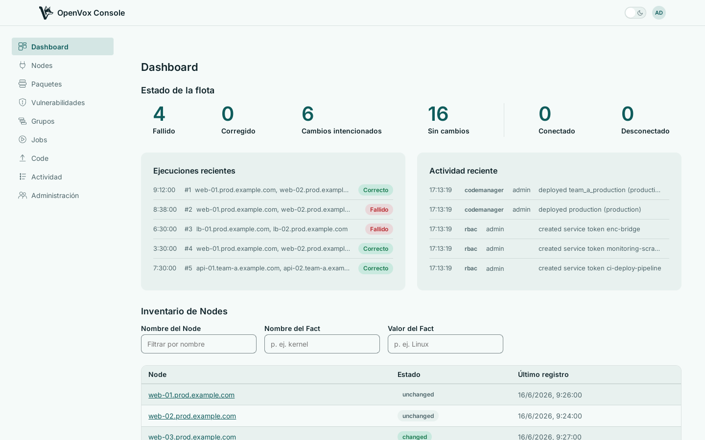

Vea cada Node, decida qué se ejecuta y dónde, despliegue su código y actúe sobre lo que vuelve. Una consola de Puppet Enterprise para OpenVox: un binario de Go, sobre el openvox-server y el openvoxdb que ya ejecuta.

Qué hace
Cada página de abajo muestra la propia consola, capturada de una instancia en funcionamiento.
Un binario que ejecutar
La consola, el control de acceso, la clasificación, la orquestación y el despliegue de código son un solo proceso. No hay nada que conectar entre sí, ningún servicio interno que mantener sincronizado, y una sola cosa que actualizar.
Se asienta sobre la pila que ya tiene. openvox-server sigue compilando catálogos y gestionando la CA; openvoxdb sigue almacenando Facts y Reports. Sus agentes siguen hablando exactamente con lo mismo de ahora: la consola sirve el contrato ENC estándar, así que no hay nada que cambiar del lado del Node.
docker compose up levanta openvoxserver, openvoxdb, Postgres y la consola a la vez, de modo que puede apuntar un agente de prueba y ver aparecer sus propios Nodes antes de comprometerse con nada.
OpenVox Console se distribuye como dos imágenes de contenedor, compiladas para amd64 y arm64 en cada push. SETUP.md recorre un despliegue real —openvoxserver, openvoxdb, Postgres y la consola— con instrucciones tanto de contenedor como de paquete.